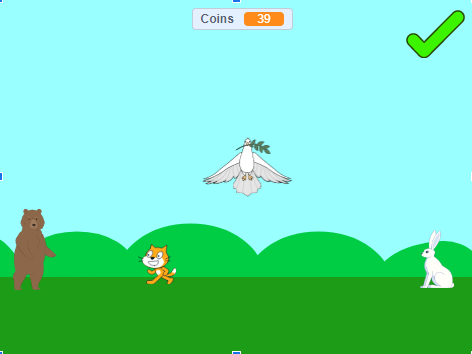

Home
Portfolio
About Me
This is my Portfolio Page!
Scratch project - Cat Life.

In this project, we made a scratch game based on the classic Duck Life game. The game starts off by introducing a story. Afterwards, you can talk with various NPCs to play minigames. Playing and completing minigames earns you coins which you can spend on a treatment for a NPC's illness. Afterwards, the NPC will give you a handsome award.
1.1.9 Project - What is your dream house personality quiz.

In this project, we made a personality quiz based on classic Buzzfeed quizzes you can find online. The program asks the user 5 questions and based on the user's responses, displays one of 6 houses that the program thinks suits the user best. The possible houses include the white house, a lake house, a large mansion, a car house, a castle, and a cardboard box. We used loops to draw certain objects in our houses and create moving turtles for aesthetics. We incorporated a loading screen to build suspense before the final output is displayed. We created a complicated point system using variables to make sure that the final output logically matches the user's responses. Lastly, we created a failsafe system for users who accidentally misinput.
1.2.5 Project - Virus Game
In this project, we made virus game which is based off of the traditional snake game. The user is able to select between 3 different game modes which alters the way the user's virus snake can die or changes the virus snake's speed. After selecting the appropriate gamemode, the user is taken to a screen with a virus. The user can now navigate the virus by changing its direction so that it can eat red or white blood cells on the screen. Eating a cell increments the score by 10 while dying either by crashing into a wall or its own body segments will result in a game over.
3.1.6 Project - Land Rover
.png)
.png)
.png)
.png)
We were able to figure out which graph was which by basing our graphs on the identification of inland forest which perfectly matches. The first graph must be light. The light stays low during the daytime only and only increases at night. This is shown through the straight, flat line in the day and increase in light at night.The second graph must be sound. The sound stays fairly constant (alternating around 75 degrees) and varies slightly above and below that temperature during storms. The third graph represents movement. There is little movement of the wind since the observed changes in wind movement all alter around 0 which represents no movement. The last graph must be temperature. The temperature is relatively low and smooth and varies slightly as shown by the bumps in the graph.
Using App Inventor to make app game Duck Hunter.
Interactive Fiction Rags to Riches.
Black Jack game written in Python.
Modified bits in pictures.
Use data files to create graphs.
Using netlogo do remix of illusions.
Interactive Fiction Rags to Riches.